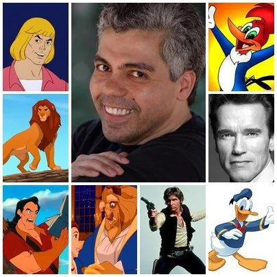
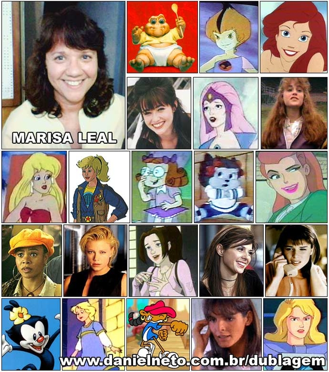
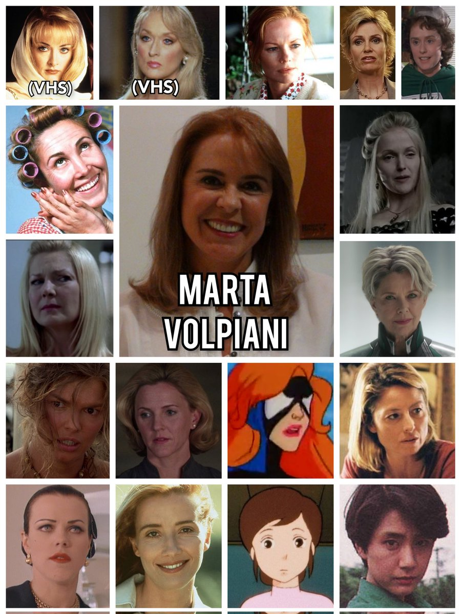

Dubladores Famosos
Confira alguns nomes de dubladores brasileiros Famosos
-
Guilherme Briggs:

Guilherme Briggs nasceu em 1970, na cidade do Rio de Janeiro, filho de Suelly Neves e Henrique Briggs. Durante a sua infância, Guilherme criava com seu pai personagens e histórias em um antigo gravador, numa espécie de radioteatro caseiro. Guilherme se refere ao pai como seu grande incentivador para as artes. Em 1991, começou a sua carreira de dublador na VTI Rio, e posteriormente passou a dublar também em outros estúdios, e seu primeiro personagem fixo foi Worf, de Jornada nas Estrelas: A Nova Geração. Em desenho animado, seu primeiro personagem foi Eek, de Eek! The Cat. Em 1994, começou a trabalhar na Herbert Richers, levado por Orlando Drummond, com quem trabalhava na VTI Rio, e no mesmo ano se tornou o locutor do Cartoon Network Brasil e mais tarde fez locuções para a Som Livre e Rede Globo.
Um dos seus principais trabalhos[carece de fontes] foi na série Friends, dublando Ross Geller, durante a 1ª temporada e a 3ª temporada e posteriormente a 10ª temporada. Entre outros personagens, já dublou Freakazoid, Buzz Lightyear, Superman, Mewtwo de Pokémon, Cosmo de Os Padrinhos Mágicos, Optimus Prime de Transformers e Samurai Jack. Os principais atores que Briggs dubla são Denzel Washington, Brendan Fraser, Owen Wilson, Zachary Quinto, David Schwimmer, Dwayne Johnson, Seth Rogen e Julian McMahon.
-
Garcia Júnior:
Manoel Garcia Júnior, nascido em São Paulo no dia 2 de março de 1967 é um ator, dublador, radialista, tradutor e diretor de dublagem brasileiro. Manoel é filho dos também dubladores Garcia Neto e Dolores Machado. Garcia Jr. começou na dublagem quando tinha apenas dez anos de idade em 1977, na BKS, substituindo Olney Cazarré no personagem Pica-Pau, e tornou-se conhecido por ter dublado He-Man, Pica-Pau, Pato Donald, Simba em O Rei Leão, MacGyver em Profissão: Perigo, Capitão Kirk na 2ª dublagem da série clássica de Jornada nas Estrelas (1ª voz), Gênio na série animada Os Smurfs, James Bond em 007 - Quantum of Solace, 007 - Operação Skyfall e 007 - Contra Spectre. Também é renomado por ser a voz principal do ator austríaco Arnold Schwarzenegger no Brasil. Como diretor de dublagem, foi o responsável pelos filmes Peter Pan: De Volta à Terra do Nunca, Procurando Nemo, Os Incríveis, Carros, além de ter sido o tradutor. Nos anos 80, Garcia Jr. era um dos dubladores mais escalados da Herbert Richers. Ele ocupou o cargo de diretor de criação da Disney Character Voices International Inc., durante 17 anos, entre 1994 e 2011, quando foi substituído por Marina Appelt e Rául Aldana, respectivamente.
-
Waldyr Sant'anna:

Waldyr Camargo Sant'anna nascido no Rio de Janeiro no dia 26 de novembro de 1936 e falecido dia 21 de abril de 2018 foi um ator e dublador brasileiro, considerado um dos grandes nomes da dublagem brasileira. Veterano da área, dublou personagens como Homer Simpson em Os Simpsons, Stan Laurel, Eddie Murphy e Hacker em CyberChase. Desde 1958, já atuava na dublagem em São Paulo, tendo se afastado logo depois, e só retornado em 1966, já no Rio de Janeiro. Passou por empresas como TV Cinesom, CineCastro, Telecine, Herbert Richers, VTI, entre outras.Como ator, participou também de várias telenovelas, tais como Água Viva, Rosa Baiana, Sol de Verão, Guerra dos Sexos, O Salvador da Pátria, Suave Veneno, Roque Santeiro, de Dias Gomes, interpretando Terêncio, o capataz (jagunço) de Sinhozinho Malta (Lima Duarte), em Baila Comigo como Jandir, na minissérie Sex Appeal como Jonas, em Corpo a Corpo como Agildo e em 2007 fez uma participação especial na novela Sete Pecados, onde interpretou um juiz de boxe. Também já participou de vários programas da Globo, como Linha Direta, o seriado Mulher e o seriado infanto-juvenil Sítio do Picapau Amarelo, durante a década de 80, dando voz ao o "Vidro Azul". Também fez narrações no seriado Juba e Lula.
Waldyr fez a voz de Homer Simpson em Os Simpsons, que foi seu trabalho mais famoso, Eddie Murphy em vários filmes, a primeira voz do avô de Ben, Maxwell Tennyson em Ben 10, Rock Bottom em O Gato Félix, Doutor Paul Williams em Laboratório Submarino 2020, Peter Potamus em A Arca do Zé Colméia, Nagatomi Rikiei em Samurai Champloo, Okyoko na segunda dublagem de Yu Yu Hakusho, entre outros.
-
Adriana Torres:

Adriana de Melo Torres Carneiro nascida em 21 de abril de 1977, após realizar um teste sem sucesso para viver a personagem Narizinho, no novo elenco de O Sítio do Pica Pau Amarelo, em 1981, na TV Globo, junto de sua irmã Mariana, Telmo de Avelar, responsável pelas dublagens da Disney e diretor da Herbert Richers, telefonou para sua família perguntando se ela gostaria de fazer um teste para a dublagem de um filme. Com apenas seis anos realizou seu primeiro papel como dubladora no longa O Caldeirão Mágico, de Walt Disney. Ela foi um sucesso e após esse trabalho foi contratada pela Herbert Richers, sendo uma das únicas crianças no elenco de dubladores da empresa na época. Acabou participando de outras produções da Disney e destacando-se em filmes e séries para televisão. Tornou-se a voz oficial das atrizes Alicia Silverstone, Anne Hathaway, Reese Witherspoon, Michele Willians, Renée Zellweger e Cristina Ricci. A partir da década de 90 começa a dedicar-se ao teatro, para aperfeiçoar ainda mais sua atuação e performance, trabalhando em companhias com temáticas infantis e amadoras. Atualmente trabalha como dubladora e diretora de dublagem.
-
Marisa Leal:
Nascida no dia 14 de setembro, Marisa Leal começou a carreira artística muito cedo e embora tenha se formado em direito, não conseguiu largar os microfones para atuar em outra área. Marisa Barbosa Leal é uma das dubladoras mais conhecidas no cenário nacional. Embora se destaque no campo da dublagem, já trabalhou em teatro em peças como "O Inventor da Alegria" e "Pluft, o Fantasminha". Na televisão, Marisa esteve nos Casos Verdade "Um Projeto de Vida" e "S.O.S. Araxá".
Em sua vasta galeria de personagens consta nomes de desenhos animados, seriados e filmes, cada um com sua própria personalidade, mas quase sempre com uma característica em comum: são em sua maioria personagens jovens. A voz de Marisa Leal não envelhece e isso proporciona interpretar nomes como Ariel, Linka, Princesa Carla, Brenda e o seu maior destaque, o Baby da Família Dinossauro.
-
Marta Volpiani:
Marta Volpiani Covre Salomão nascida em 9 de abril de 1957 é uma atriz e dubladora brasileira. É famosa por dar a voz a personagem Dona Florinda na série Chaves e aos demais personagens da atriz mexicana Florinda Meza. Foi indicada ao Prêmio Yamato de 2006 na categoria Melhor Dubladora de Protagonista por seu trabalho como a Dona Florinda, na redublagem de Chaves feita na época.
Atuou em novelas como O Profeta e O Espantalho na extinta TV Tupi, Cavalo Amarelo na Band; Solar Paraíso, Destino, A Leoa, O Anjo Maldito e Vida Roubada, todos no SBT, antiga TVS, muito tempo depois atuou em Por Amor e Ódio e Câmera Café. No Cinema esteve em A Noite dos Imorais, Belinda dos Orixás na Praia dos Desejos e As Trapalhadas de Dom Quixote e Sancho Pança.